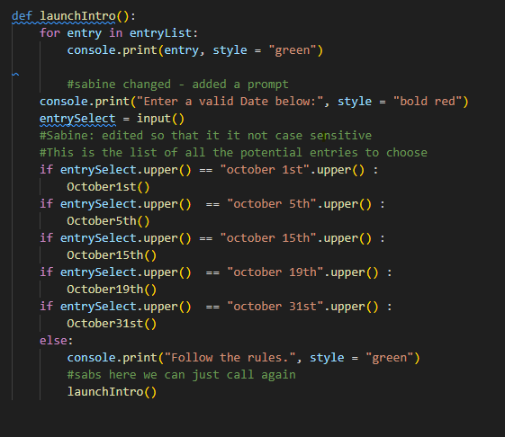
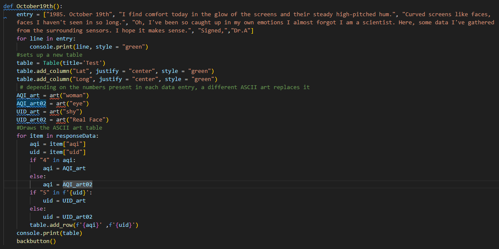
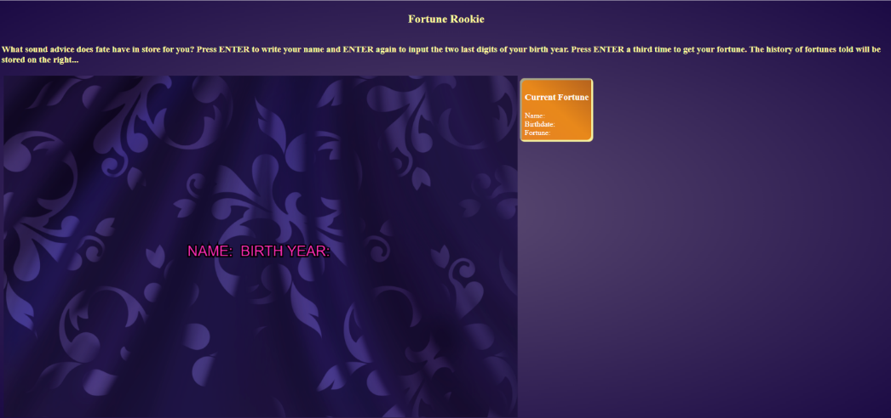
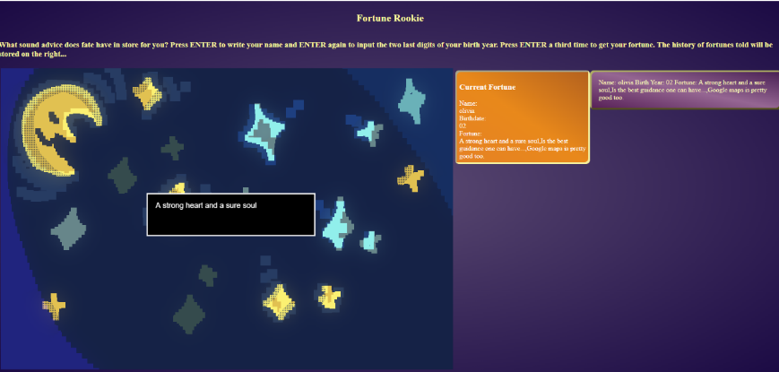
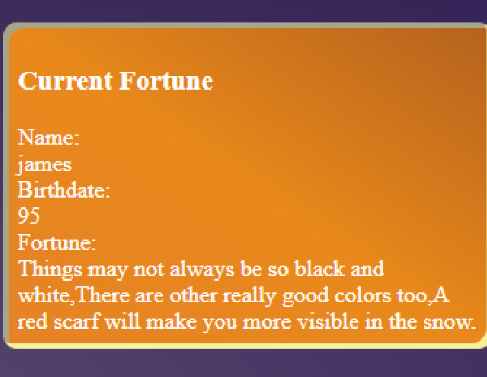

Status: Moderator

Juliax28
After the python introduction, I am looking forward to learning more about the language. Having already done classes where I worked in javascript, it seems like this will be fairly similar. I've already had a look at the worksheet, and I was able to finish most of the exercises fairly quickly, so I'm hoping my positivity will stay throughout the rest of the semester!
2025/09/19
Excited!
Status: Moderator
Juliax28
After completing the first worksheet assignment, I am still pleased to say that I feel as if python may be easier to get the hang of in some ways than Javascript. It is more forgiving when it comes to syntax, and many of the functions we used in this particular exercise are self explanatory. However, I am also curious to see how it deviates from Javascript in the future, and I am looking forward to experimenting more with the language in more creative ways.
2025/09/21
I wanna make games!
Status: Moderator
Juliax28
At this moment, I have just finished the first 'in-class' assignment, which concentrated on retrieving information from lists and dictionaries within an API. Although what we did was a very simple exercise, I found it interesting to finally understand what an API was, and be able to see how to access the information. Being able to access such enormous databases through python is clearly incredibly powerful and opens up many avenues for productivity AND creativity. So, while reading the first project outline, I became excited to explore these creative avenues.
2025/09/24
So much data...
Status: Moderator
Juliax28
After the FLASK class, it's starting to make more sense to me how python can be used to make interactive websites. Even just the small amount of experimentation during the class time allowed some of these ideas to finally click in my head. Unfortunately, it seems like everyone is getting sick, and seeing that I was no exception I was in a bit of a fog. However, I will put extra effort into reviewing the information so that it sticks in my mind. Good thing I've been taking good notes!
2025/09/29
A little tired, but we push on.
Status: Moderator
Juliax28
Monday was the final submission for the first project/assignmnet, and all in all I think that my sister and I did pretty well with the knowledge that we have so far. Using the terminal as our main output srouce, we were required to use the information from the World Weather API in order to create some interesting outputs. Since we are both more narrative oriented people, we decided to make a sort of log from the perspective of a scientist gone mad. As the player explores the entries, they uncover a story about the Dr. who has become the machine, with the final log revealing that they have become the terminal... a "terminal illness" some would say... The text opens with asking for a password, name and then reveals the journal entries.  Then, each journal entry has it's own 'quirk', which is to say that an interesting occurence happens that utilizes the web API's information in order to display something creative. For example, the Dr. expresses that the screens around him begin to look like faces, which is then follwoed by a nonsensical graph wherein ASCII art of faces appear. However, these faces can change day by day, as they are based on AQI and UID.  This leads me to the fact that we ued both ASCII art and RICH to enhance the look and feel of our small program, and I belive that implementing these small artistic expressions does elevate the experience of playing through the short narrative. Overall, I am quite happy with how the project went. We were fairly independent while working on it, and only asked a few questions near the end (which is already a step up from working in JavaScript last semester, might I add). Being able to implement a fun, creative use to even a basic Python code did prove to be quite rewarding. :D
2025/10/10
Python code that looks like faces!
Status: Moderator
Juliax28
Yesterday I handed in Exercise II, which dealt with combining FLASK with a JINJA template, allowing us to display and work with FLASK information on a webpage. I had fun with this exercise as I worked with my sister, as we tried to put some creativity into the visuals. Moreover, learning how to fetch information from FLASK and display it using a template is obviously incredibly useful, and I cna already understand how powerful of a tool it may be for more complex website creation.
2025/10/23
JINJA sounds like GINGER
Status: Moderator
Juliax28
Things are getting more and more complex! In the third part of our FLASK classes, we were taught ways to store session variables as well as create and submit forms. Cool! This adds yet another layer of possibility for interactivity and complexity with the user. Unfortunately, midterms have my mind a little scattered. Hopefully I can take the chance to catch up on the information I may have missed/ clear up some information in FLASK part IV next week.
2025/10/27
!!!
Status: Moderator
Juliax28
STM strikes, post-halloween sadness and FLASK PART IV. One would think these thigns don't go very well together, and yet, I found myself grasping the ideas in this class more easily than last week. Being able to work with JSON files seems like it could be incredibly useful, especially after having done projects where the information stored in JSON files played a keu role, I am beginning to imagine a scenarion similar to said projects, only maybe with some sort of dynamic/more interactive elements? Anyways, it's fun to think about.
2025/11/05
Where are the busses.
Status: Moderator
Juliax28
Today I finally handed in project 02, which delt with all the aforementioned FLASK + PYTHON + JSON functionaltiy from the last few weeks, minus Monday's MONGO class. Once again working with my sister, we aimed to make something akin to a fortune-telling/horoscope reading experience that used the user information in some way in order to give said fortune. Although we went with something relatively simple, I thought it was executed in a fairly succesful way. If I had more time, It would've been nice to elevate the experience by adding more fortunes/ more artwork. The project works simply: first, the user is asked to enter their name and the last two digits of their birthyear. The program then converts the birthyear number into a chance%, assigning a fortune then to that user. The fortune appears on the side in orange. If more users input their information, the previous fortunes appear next tot he current orang one, allowing for a collective display of everyone's information.   The player information + fortune is displayed from a JSON file that actively stores the information after every turn, with the orange and purple boxes taking said information to display.  We decided to take a more playful angle to the project, and I think it was pretty succesful considering the chaos of this midterm season.
2025/11/12
My fortune tells me the busses will begin running again - it was right
Status: Moderator
Juliax28
Last class was dedicated to two things; first, we were introduced to how to use websockets - a way of having multiple people interact with one another on the same webpage, as long as they have the same link. This opens up the possiblity of inter-user interactbility such as chatrooms and other live inter-user building projects. While I do not think I will use this for the final project, it did have me considering the exciting possibilities. The second half of class was a demo period, where we were able to show our work casually to the other students for project 02. I emjoyed this, especially since the recent strikes caused a few in-class critiques to be cancelled. It was fun to be able to discuss with the other students as well as show my own work as a way to gain potential ideas for the final project.
2025/11/19
Hey, anyone else seeing my messages?
Status: Moderator
Juliax28
Second to last class... I can see finals approaching! As I'm trying to balance many thinks at the same time, I'm also trying to figure out how to use MONGO in a more effective way in exercise 05. The first portion of the exercise went fairly smoothly, but it's trying to wrestle with Javascript for the visualizations that will take some time. In any case, using MONGO is required for the final project, and so trying to wrap my head around accessing a database like this will surely help with the final. With an idea in mind and only a couple weeks left of class, let's hope it all goes smoothly, and I'm looking forward to another group demo.
2025/11/26
I wanna make games!